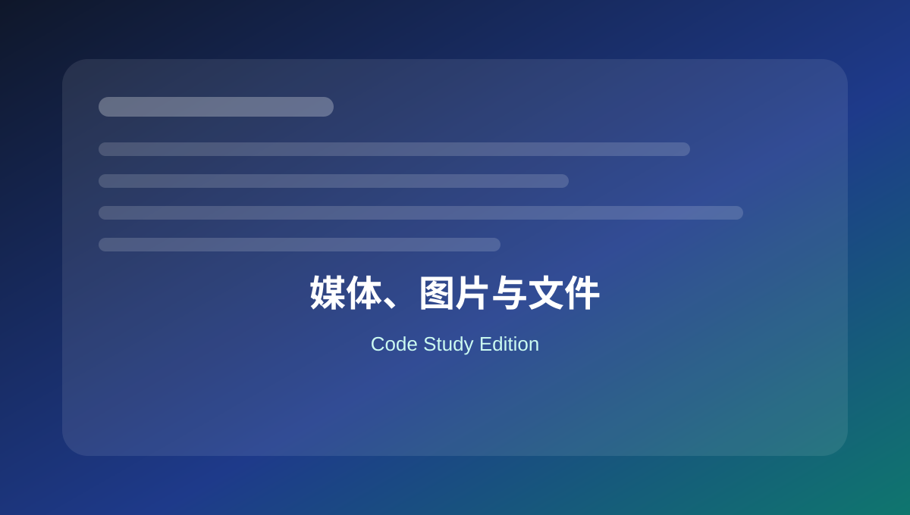

05 媒体、图片与文件
整理特色图、图片尺寸、附件信息、Alt 文本、上传限制和 SVG 支持场景。

本页关键词
post thumbnails
add_image_size
wp_get_attachment_image
upload_mimes
alt
学习目标
- 会启用特色图
- 会注册并输出图片尺寸
- 会读取附件 Alt
- 理解上传类型控制
- 知道 SVG 支持要谨慎
代码使用提醒
本页代码适合用于学习和研究。复制到正式网站前，请先备份，并优先在测试环境验证。
涉及用户输入、后台保存、接口请求、删除操作和邮件发送时，要同时考虑权限、nonce、sanitize、validate 和 escape。
1. 启用特色图和自定义图片尺寸
基础
<?php
function mysite_image_setup() {
add_theme_support( 'post-thumbnails' );
add_image_size( 'hero-banner', 1600, 700, true );
add_image_size( 'product-card', 600, 420, true );
}
add_action( 'after_setup_theme', 'mysite_image_setup' );
新增图片尺寸后，旧图通常需要重新生成缩略图。
2. 输出特色图并添加 class
基础
<?php
if ( has_post_thumbnail() ) {
the_post_thumbnail( 'product-card', array(
'class' => 'product-card__image',
'loading' => 'lazy',
) );
}
the_post_thumbnail 可以传尺寸和属性数组。
3. 用 wp_get_attachment_image 输出图片
实用
<?php
$image_id = get_post_thumbnail_id();
if ( $image_id ) {
echo wp_get_attachment_image(
$image_id,
'hero-banner',
false,
array( 'class' => 'hero__image' )
);
}
wp_get_attachment_image 会生成更完整的图片 HTML。
4. 获取图片 Alt 文本
SEO
<?php
$image_id = get_post_thumbnail_id();
$alt = get_post_meta( $image_id, '_wp_attachment_image_alt', true );
echo '<img src="' . esc_url( get_the_post_thumbnail_url( null, 'large' ) ) . '" alt="' . esc_attr( $alt ) . '">';
Alt 文本输出在属性中，要用 esc_attr。
5. 限制上传文件大小提示
后台
<?php
function mysite_upload_size_notice() {
$screen = get_current_screen();
if ( 'upload' === $screen->id ) {
echo '<div class="notice notice-info"><p>建议上传前压缩图片，避免超过 300KB。</p></div>';
}
}
add_action( 'admin_notices', 'mysite_upload_size_notice' );
可以在媒体库后台给维护人员加提示。
6. 允许上传 SVG 示例
安全
<?php
function mysite_allow_svg_uploads( $mimes ) {
if ( current_user_can( 'manage_options' ) ) {
$mimes['svg'] = 'image/svg+xml';
}
return $mimes;
}
add_filter( 'upload_mimes', 'mysite_allow_svg_uploads' );
SVG 可能包含脚本风险，真实项目建议配合 SVG 清理库或专用插件。
本页总结
媒体相关代码重点是图片尺寸、输出方式、Alt 文本和上传安全。图片处理好，SEO、性能和维护都会更稳定。